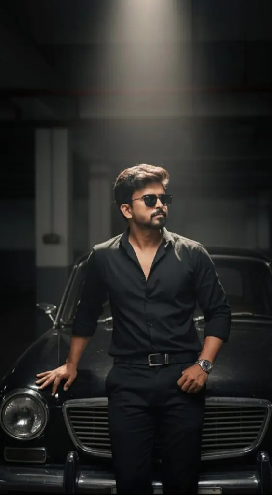
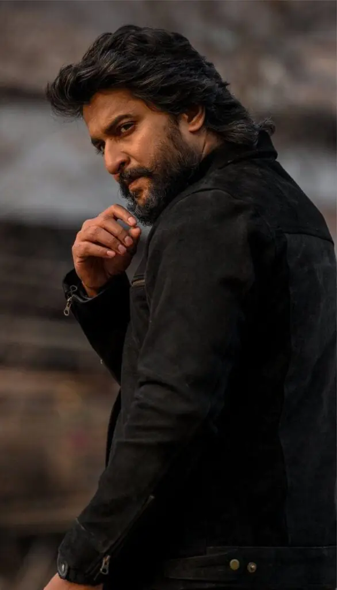
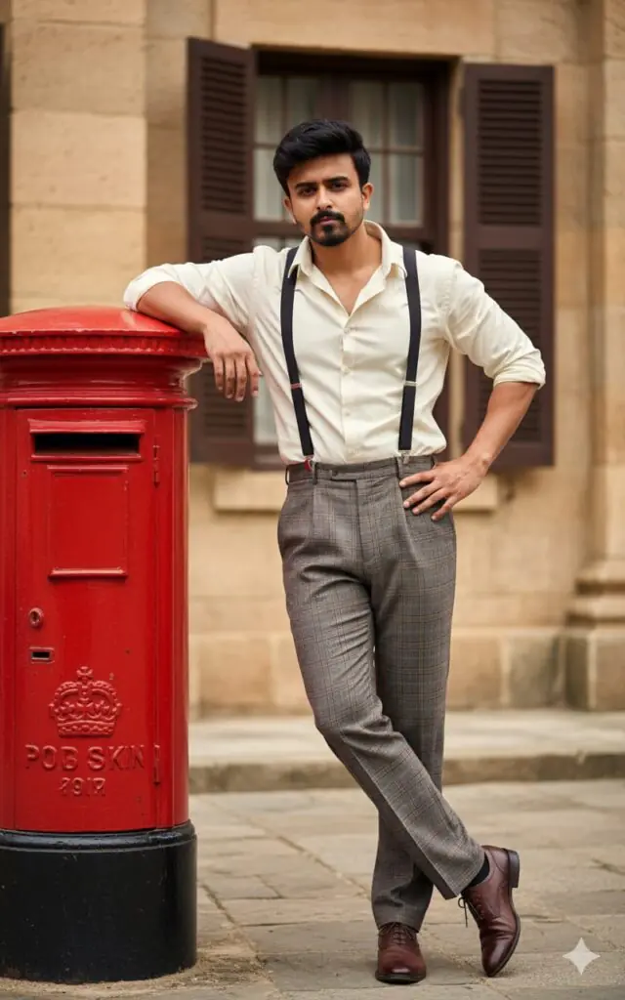
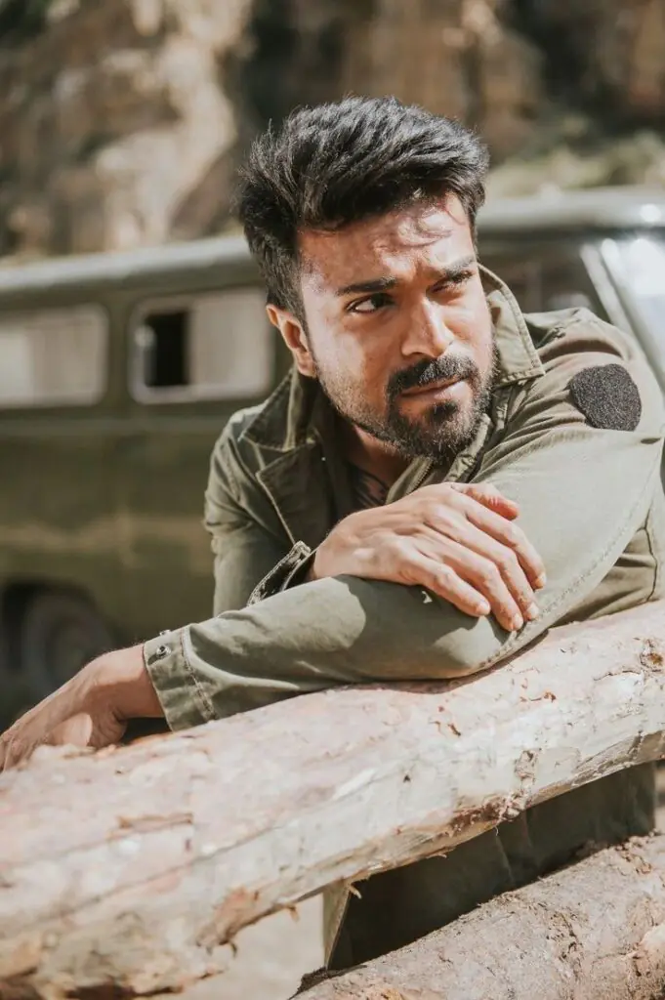

Want more awesome prompts?
Join our community and get the latest viral prompts daily.
Follow on Instagram
? AI PROMPT
"A stylish young man with dark, slightly wavy hair and a well-groomed beard, wearing a black long-sleeved shirt unbuttoned at the collar, black trousers, a belt, and a wristwatch. He is wearing rectangular sunglasses. He is leaning against the front fender of a vintage black car, which has a classic design with chrome accents. The setting is a dimly lit parking garage or industrial space, with concrete pillars and walls visible in the background. There is a single bright overhead light illuminating the man and the car, creating a dramatic and somewhat mysterious atmosphere with strong shadows. The man has a confident and slightly contemplative expression, looking off to the side or directly at the viewer."
? AI PROMPT
Ultra-realistic cinematic full body shot of a sophisticated and confident fit man ( face and curly wavy hairstyle perfectly Cong as same as the uploaded picture) walking in a softly lit festive setting. The man has a thick, neatly groomed beard and expressive eyes, exuding charm and confidence. He wears a luxurious dark navy-blue tuxedo open jacket with black embroidered sequin detailing on the lapels and shoulders, paired with a crisp white shirt cool unbuttoned at the top for a relaxed yet elegant look with golden pendent in neckand dark navy-blue pant. the man’s right hand is hanging near to the chest area and His fingers are relaxed and slightly spread, suggesting a gesture of namaste, humility, respect, or acknowledgment The background is a beautiful bokeh of soft pink, peach, and golden lights, inspired by floral decorations, giving a dreamy and celebratory ambience. The lighting is warm and cinematic — golden tones highlighting the face contours and adding depth and glow to the skin.The overall atmosphere feels luxurious, emotional, and cinematic, with 8K ultra-realism, soft focus background, and sharp details on the subject’s face and outfit.

? AI PROMPT
Ultra-realistic cinematic portrait of a rugged and confident man (face and wavy hairstyle will same as uploaded picture) standing outdoors with a woody background. He has thick, wavy dark hair brushed back, a neatly groomed full beard, and a piercing, intense gaze looking over his shoulder. His expression is serious and powerful, giving off a mysterious and dominant aura.He is wearing a black suede jacket with visible zipper details on the sleeves and sides, slightly open at the collar. His right hand is raised near his face, fingers gently touching his chin as if caught in a moment of thought or determination. The lighting is warm and directional, highlighting the contours of his face and texture of his jacket.The background is softly blurred, featuring earthy tones—possibly an outdoor rocky or rustic setting—to keep focus on the man’s face and posture. The overall tone of the image is cinematic, with muted colors, shallow depth of field, and a golden-hour glow creating a dramatic and intense atmosphere.g p .

? AI PROMPT
A handsome South Asian man in his early 30s; (face and hairstyle will same as uploaded picture) dark hair styled back; confident,looking slightly to right side intense expression; wearing a light-colored (cream) collared shirt with rolled sleeves; dark-colored suspenders over the shirt; high-waisted, pleated, patterned (plaid/checked) muted brown/gray trousers; dark brown dress shoes; leaning casually against a vibrant red, vintage-style British pillar mailbox; left arm bent, resting on top of mailbox; right hand on hip; left leg crossed over right leg at ankles; outdoor, possibly historical or colonial setting; background building facade with textured walls (stone/stucco) and wooden window shutters; bright, natural daylight; full-body shot; vertical orientation; shallow depth of field; photorealistic; cinematic/period drama aesthetic.
? AI PROMPT
Ultra-realistic cinematic portrait of a rugged, intense man (face and hairstyle will same as uploaded picture) sitting confidently on a rustic wooden chair; he has a medium thick beard and voluminous wavy hair styled back; his expression is fierce and focused, exuding dominance and charisma; he wears a deep maroon traditional lungi or dhoti draped loosely; his dark textured shirt has an open collar with intricate red embroidered designs on the shoulder and chest; several gold chains and pendants hang around his neck; he also wears thick rings and bracelets that gleam in warm light;his right elbow rests on the arm of the chair; his right hand is raised near his face with fingers slightly curled, showing power and confidence; his left arm is relaxed, resting on the opposite armrest; his legs are spread in a relaxed but assertive posture, with one knee bent upward and the other leg stretched forward, giving a fearless, boss-like attitude; the background glows with a surreal blue light; faint fog and smoke fill the air; a glowing blue ghostly The logo "Wild Fire" features appears behind him, adding a supernatural and mysterious feel; lighting is dramatic, with warm highlights on his face and upper body contrasting against the cool blue backlight; soft shadows and reflections enhance the realism ; cinematic atmosphere; ultra-detailed textures of fabric, skin, jewelry, and wood; warm-to-cool color contrast; 9:16 vertical ratio; soft smoky ambiance; high dynamic range lighting; powerful, godfather-like mood.

? AI PROMPT
A ultra realistic rugged and intense man (face and hairstyle will same as uploaded picture) leaning casually on a wooden log fence in an outdoor setting with rocky cliffs in the background. He has a masculine and confident expression, gazing thoughtfully into the distance under bright daylight. he sports a neatly trimmed beard. He wears a military-style olive-green jacket with rolled-up sleeves, giving a raw and adventurous vibe. The sunlight highlights his facial features and adds a warm golden tone to the scene. Behind him, an old green vehicle (like a jeep or van) is slightly blurred, enhancing the cinematic depth of field. The overall atmosphere feels earthy, realistic, and cinematic — with a hint of dust, nature, and realism.